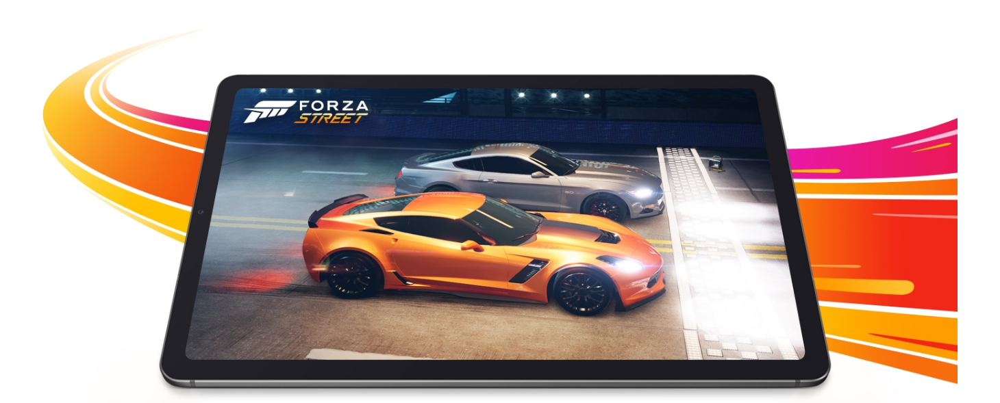

Découvrez la Galaxy Tab S6 Lite. Avec elle, vous allez libérer votre créativité.
Profitez de son S Pen inclus pour découvrir un réel plaisir pour dessiner, apprendre ou jouer.
Ultra-réactif, il est le compagnon idéal lors de vos prises de notes.
Fine et légère, la Galaxy Tab S6 Lite se dote d'un grand écran de 10,4 pouces et de l'interface One UI 2 pour une convivialité de premier plan.
Soyons honnête, elle va vite se rendre indispensable à votre quotidien.
La Galaxy Tab S6 Lite se glisse facilement dans votre sac pour offrir une mobilité parfaite au quotidien.
Adoptez le coloris Oxford Gray ou Angora Blue.
Dessiner ou écrire avec le S Pen est naturel et précis. Sa prise en main est instantanée pour vous offrir des sensations digne d'un stylo.
Avec son faible temps de latence et sa très grande sensibilité, le S Pen est un véritable outil de précision.
Maintenant, à vos croquis.
Avec la Galaxy Tab S6 Lite étudier chez soi n'a jamais été aussi simple et efficace !
Lorsque vous regardez une vidéo, utilisez le S Pen afin de noter rapidement vos idées et organisez vos réflexions
sur Samsung Notes avec fluidité, en ajustant simplement la transparence des fenêtres.
Ainsi, vous pouvez continuer à suivre vos cours, même depuis votre chambre.
Protégez votre tablette dans un étui aussi élégant que pratique.
Le Book Cover de la Galaxy Tab S6 Lite se positionne de trois manières différentes pour
une utilisation toujours confortable quel que soit votre usage. Un emplacement est réservé pour ranger votre S Pen, afin d'éviter tout oublie.
Vitesse + Mémoire + Puissance = Courses épiques
64 Go
4 Go
1 To